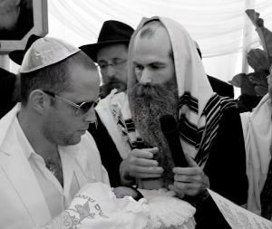

A Delayed Bris Mila Saves Three…
The two became anxious. What would they do if it turned out that the mother of the newborn infant was in fact a Gentile? With great effort on their part the father was finally beginning to come closer to Yiddishkait. By walking out on him now, they would destroy everything they had worked so hard to build.
Translated by Michoel Leib Dobry

“Every bris mila is a special experience,” I thought. “But what was so special about this bris mila to make it worthy of an article in the Beis Moshiach Magazine?”
I naturally kept my thoughts to myself as I listened attentively to the bachur’s story. It turned out that this was not your typical entry in a Tamim’s “770 diary” as I had assumed at first. In fact, this was a most unique event where those in attendance clearly saw G-d’s Divine Hand at work. It provides a fine illustration of the concept that when one stands firmly but politely for the position and principles of Torah, his efforts will bring him great success.
Mendy and Shneur (not their real names), two bachurim learning in 770, left the large beis midrash of Beis Chayeinu. Once they received the permission of the yeshiva administration, they headed for an events hall up in the Bronx. An Israeli, with whom they had become quite close through their mivtzaim route each Friday, was celebrating the bris mila of his newborn son, and he had personally invited them to come and participate in his simcha.
As the T’mimim were approaching the hall, they checked their watches and saw that they were running late. Worried that they might miss the bris, they began to quicken their pace. As they approached the main entrance, they saw many people in the distance standing outside. It looked like they had in fact missed the bris.
Upon entering the hall, they met their friend, the baby’s father. After exchanging a warm embrace with them, he explained to the puzzled bachurim the reason for all the confusion. “The bris hasn’t begun yet. The mohel is still checking things out…” By the expression on his face, they could see that his patience was running thin.
Mendy went up to the mohel, Rabbi Yisroel Heller from Crown Heights, and asked, “Has something happened? Why is the bris being delayed?”
The mohel quickly began to explain. “I want to be certain that the child’s mother is Jewish. The family claims that she was born to a Jewish mother, but she doesn’t have her k’suba on hand (to prove it). This leaves me with no choice except to wait for approval from the city’s rabbinical institute, which is checking this out right now.
“I want to make this quite clear,” the mohel told them firmly. “All of our equipment is packed up and ready to go. If it turns out that the mother is a Gentile, we’re out of here. It’s forbidden to let anyone think for even a moment that we support performing a bris mila on a child born to a Jewish father and a non-Jewish mother.”
The two became most anxious. They weren’t expecting a story like this. What would they do if it turned out that the mother of the newborn infant was really a Gentile? With great toil and effort, they had managed to establish a good connection with the father, and he was even beginning to come closer to Yiddishkait. If they were to walk out now, they would destroy everything they had worked so hard to build.
In the meantime, the baby’s father was pacing the hall impatiently. He was on the verge of calling a doctor to circumcise the child without the need for any further clarification.
The guests anxiously waited for about an hour and a half for the results of the inquiry. Finally, word came back from the rabbanim that the mother apparently was almost certainly Jewish; however, it could not be determined with absolute certainty…
As a result, the bris would take place, but the brachos would have to be made without using G-d’s Name. Furthermore, it was being performed conditionally: If the mother was Jewish, the circumcision would be for the purpose of fulfilling the mitzvah of mila. Otherwise, it would be performed for the purpose of converting the child to Judaism. The two T’mimim together with the mohel would serve as a beis din, and they appointed the mohel’s assistant, who was also qualified to do a bris, to be their shliach to circumcise the child as part of the conversion process, in the event that the mother is not Jewish.
Everyone was delighted that the problem had been solved, and they proceeded to gather around the child for the ceremony. Yet, just before the assistant started making the preparations for the bris, the mohel went over to the table upon which the cradle bearing the child had been placed, and he lifted the baby and the cradle.
He never could have imagined that this simple action would save the peacefully sleeping child from grave danger. A split second later, as everyone watched in amazement, the table collapsed with a tremendous crash, as the bottles of wine and vodka placed on it smashed to pieces…
The family and all the guests stood in stunned disbelief when they realized the tremendous miracle that the child had just experienced. The mohel, whom everyone assumed was trying to hold up the simcha, lifted the child for no apparent reason, and suddenly turned into the one who had rescued him from severe injury due to the broken glass.
But if you think that this is the end of the story, think again. It’s just the beginning…
After the hall’s staff cleaned everything up and brought out a sturdier table, the bris was finally performed. The father then called upon one of the T’mimim to recite the bracha and to give the child his Jewish name.
Then, the unusual chain of events grew even stranger. This bachur suddenly became dizzy and passed out. It took several minutes to revive him. Meanwhile, everyone waited…
At this point of the story, you can imagine the powerful effect all this had left upon the assembled guests. As a result, you can better understand what happened next:
After the bris was completed in a good and auspicious hour and the child had been named “Eitan,” everyone sat down for the festive meal. The mohel asked for their patience to hear him say a few words that would make matters clear. Determined not to leave anyone with a bad impression, he calmly proceeded to explain in great detail the reasons leading to the delay, and how the bris was eventually conducted.
While this naturally created an uncomfortable situation for the family, the mohel explained that they had the great privilege of preventing a whole series of halachic mistakes stemming from their simcha.
The two T’mimim soon got ready for the journey back to Beis Chayeinu to resume their studies. Before they left, they explained to the baby’s father that the name he had given to his son – Eitan – had a special connection to the Tanya and they then presented him with a Chitas and pushka for the child. They also arranged with him to start a regular class in Tanya. When the bachurim departed, they were certain that the story was finally over.
Then, a few days later, while Mendy was sitting and learning in 770, he was told that someone important was looking for him. It was the mohel, Rabbi Heller. “What happened?” Mendy asked. With great excitement, Rabbi Heller proceeded to relate:
“Three days after the bris, I made my way to the family’s home to check the baby and make certain that everything was all right, as I customarily do after every bris. During the visit, the parents told me about the amazing conclusion of that event, which took place shortly after we had left the hall.
“After the assembled guests had heard my explanation for the bris’ delay and the serious consequences of intermarriage, an argument broke out between two women. One was a convert, currently not Torah observant and married to an Israeli Jew, and the other was a Gentile who was also living with an Israeli Jew.
“The two began to quarrel. Their voices became louder, while everyone else found themselves drawn into the fray. The Gentile woman said: ‘You’re a liar! You got a conversion certificate from a rabbi, as if you want to live like a Jew, and you don’t even act like one!’ The convert replied: ‘At least my husband is married to a Jew. Your husband is living with a shiksa!’ ‘You lied to the rabbis…’ ‘You’re making problems for your husband with G-d…’
“The hall was soon in complete turmoil, as tempers reached a boiling point. Then, at the height of the argument, the Gentile woman totally lost control and flipped a table filled with food on the female convert…
“This proved too much for the Israeli Jew who had been living with this Gentile, particularly after what he had heard that evening about the serious consequences of intermarriage. He decided right then and there to cut off all contact with this woman! As for the convert, she saw this as a clear sign from Hashem to strengthen her connection to Torah and mitzvos.
“This naturally had an effect upon the child’s parents as well. The mother decided to become more observant in her fulfillment of mitzvos at home. As for the father, he promised that he would eventually enroll his son in a Jewish day school founded on the teachings of Torah. He is willing to pay whatever it will cost for such an education.”
Such is the power of standing firm, yet polite, for the requirements of the Torah!
Brook. "A Delayed Bris Mila Saves Three…." Beis Moshiach, no. 828 (March 22, 2012).